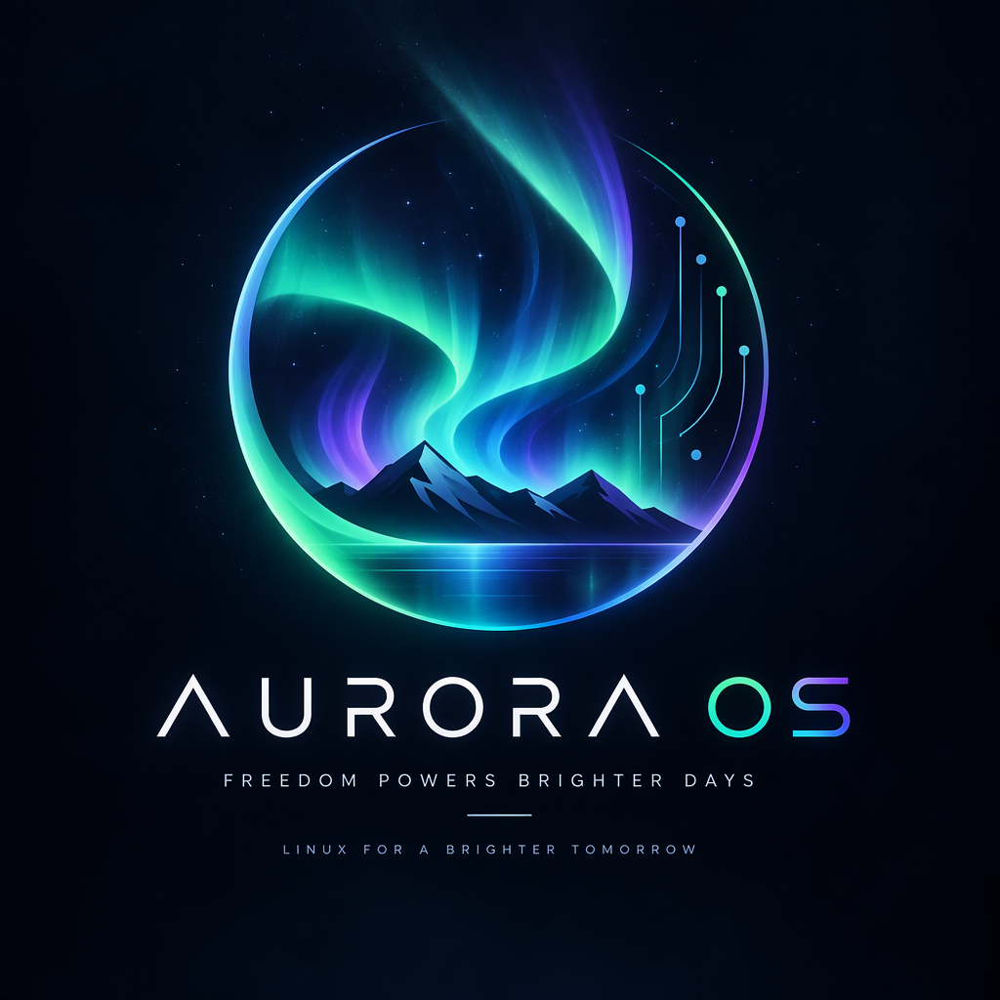
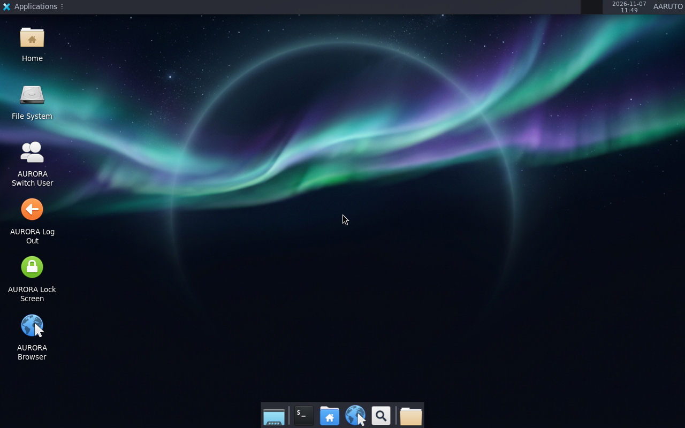
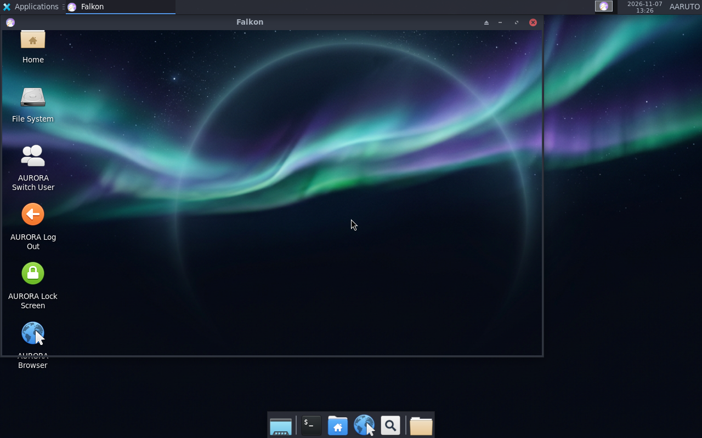
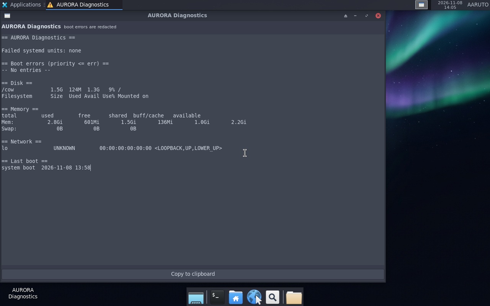
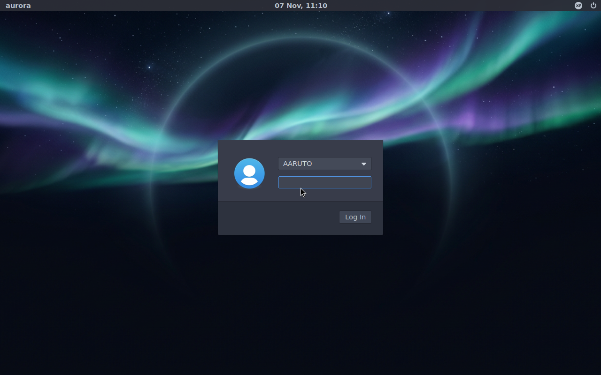

Aurora OS
Freedom powers brighter days
About AURORA OS
A bootable Linux desktop built on Ubuntu 26.04 LTS with an aurora-inspired dark identity, a branded login page, a real browser, system utilities and working session actions. It runs live from a USB stick or a virtual machine — nothing is installed to a disk.
Branded from boot to desktop
GRUB, greeter, wallpaper, panel, identity files and credits agree on one identity: AURORA OS, MADE BY AARUTO.
Real login, real session
LightDM greeter with password login, logout back to the greeter, and Switch User through LightDM's dm-tool.
Honest engineering
Every feature is tested and labelled PASS, PARTIAL or NOT TESTED. Known limitations are documented instead of hidden.
Features
Everything below is in the 0.5.0-dev image and verified in QEMU unless marked otherwise.
AURORA Browser
Mozilla Firefox 159.0.1 with software WebRender, bundled at /opt/firefox. Renders without a GPU; verified in the VM.
System Info
Kernel, CPU, memory, storage, session and failed units read from the running system.
Diagnostics
Failed systemd units, boot errors with credential redaction, disk/memory/network status.
Session actions
Log Out, Switch User and Lock Screen through aurora-session-action, safe outside a session bus.
AURORA identity
Hostname, greeter, panel name AARUTO, /etc/aurora-release, credits and artwork.
Fast boot & instant demo
Offline-only units masked, 30 s systemd timeouts, KVM boot in ~90 s and a QEMU snapshot launcher.
Desktop
XFCE 4.20 on Xorg, Arc-Dark, elementary-xfce icons, wallpaper, dock and AURORA desktop icons.
Reproducible tooling
live-build config, pinned Firefox download hook, verification scripts and a release-profile gate.
Documented
Architecture, build, testing, known issues, roadmap, security and credits in the repository.
Screenshots
Captured from the 0.5.0-dev ISO with QEMU screendump.




Project status
Milestones follow the repository roadmap. Only executed tests receive a PASS.
| Milestone | Scope | Status |
|---|---|---|
| M1 | Bootable base ISO | Pass |
| M2 | Identity and graphical login | Pass |
| M3 | Functional desktop | Partial |
| M4 | System utilities | In progress |
| M5 | Release candidate | Blocked |
| M6 | Optional advanced work | Not started |
| M7 | Installer, UEFI, USB, persistence | Not started |
| M8 | AURORA applications and optional AI | In progress |
Known limits: BIOS-only image, no installer, test-only root serial console in the test profile, and the release build is currently blocked by archive kernel drift (see Known Issues).
Download
Live ISO — boot it from a virtual machine or write it to optical media.
v0.5.0-dev
1,050,607,616 bytes · SHA256
29691f1d321bc4c6806f673004d7836a7e1a407e01a5a267a99fc7b17dc1e756
What changed
Working Firefox browser, System Info and Diagnostics apps, real greeter login, logout and Switch User, polkit and LightDM fixes, boot-time tuning and the instant VM launcher.
Run it
QEMU with KVM is the fastest path; the image is BIOS-only.
qemu-system-x86_64 -machine q35 -accel kvm -m 3072 -smp 4 \
-cdrom aurora-os-0.5.0-dev-amd64.iso -boot d -vga std \
-display gtk -nic none
Login: user ubuntu, password aurora (the greeter shows AARUTO).
A VMware VMX bundle is in distribution/vmware;
VMware requires BIOS firmware and 4 GB RAM.
Documentation
Architecture
Boot chain, components and decisions.
Build and run
Toolchain, live-build, test harness, release profile.
Testing
Every executed test, PASS or FAIL, with evidence.
Known issues
Open limitations with workarounds.
Roadmap
Milestones 1–8 and the next-actions plan.
Credits
AARUTO, DP-_-, DEV. MADE BY AARUTO.